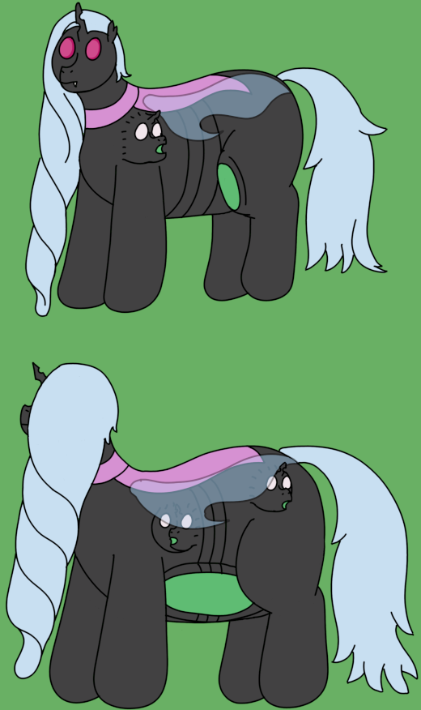

| Source | Resurrected aggregate puppet mass |
| Durability | 12/10 |
| Strength | Physical: 8/10 Psionic: 1/10 Morphological: 12/10 Magical: 13/10 |
| Specials | Facade creation Shapeshifting Flight Magical replication of psionic traits |
| Personality | Variable; tends towards clinginess |
False Archons are replica organisms designed to very closely mimic Archons, to the point of spoofing a psionic connection to their Archmother of choice to facilitate a psionic-esque form of coordination. They spawn Facades rather than Puppets, and have little psionic potential to them.
False Archons have a very particular physique to them, as while they sport similar morphology to the Archons they mimic, their bodies are instead wrapped in a chitin shell. They also sport green internals, and a pair of insect wings that allows them to fly (though their stamina is inferior to that of something like a Solar Archon). Their side-heads, replicating the seeming importance of the physical features in typical puppet creation, have horns to aid in magical concentration and conduction, which powers the False Archon's ability to mimic spawning.
Given that they are infiltrators, False Archons have the ability to completely alter their physical form, including colours, textures, and even the arrangement of their limbs to better mimic their hosts. While exaggerated shape shifts rapidly strain the False Archon, subtle changes like the simple addition of fur can be maintained indefinitely so long as the False Archon is not strained by anything else. They can even pass shapeshifting instructions directly onto their spawn as it is being created, allowing them to mimic a proper Archon even when spawning.
False Archons very closely replicate their desired targets (normal Archons), to the point that many of their features can be described as a magic replacement for a certain psionic feature. This lack of psionics is perhaps their most defining trait, as their only psionic inclination seems to be a basic level of translation from their more natural "magical" language and the imposed psionic signals of the host Archmother. This does, however, allow them to make their disguises extraordinarily convincing, as they can allow an Archmother to requisition control of their Facades when needed.
In and of themselves, False Archons are not especially strong in any way. While superficially, their magic is stronger than that of Solar Archons, the division between Facade management and spellcasting means that, one on one, a Solar Archon will beat a False Archon in spellcasting potential. Their spoofed psionic connection also means that controlling puppets is far from a natural reflex for a False Archon, requiring a substantial amount of training to properly master. Like other Archons, however, they have a focus on spawning, with False Archons having an entirely unique caste of "Facades" that supplant their ability to create normal puppets. Lastly, while not nearly as strong as Gangrenous Archons, False Archons do boast significant physical strength and respectable durability.
As infiltrators, False Archons can display a particular trichotomy of behaviours based on their living situation. These are known as the "Obfuscated", "Rejected", and "Adopted" personalities:
False Archons do not spawn true puppets. They simply do not have the anatomy or neurology to do so. Instead, they spawn Facades, which are capable of shapeshifting to mimic certain puppets. The full list is:
False Archons, not being Archons or even puppets at all, are very insular in terms of epigenetic triggers. How they pattern psionic communications into magic messages seems to largely be a static aspect of their biology, rather than a personal sequence of sorts. As such, relatively little is left up to the False Archon's own epigenetics, aside from the exact shape or configuration of features they take.
Among Facades, however, Archons are quite complex given how much they have to manage, with many traits that seem to relate to strong magical performance and morphological stamina.
I suppose calling the False Archons my children is exactly what they'd wish for, but I can't help myself. Even if I know they came from elsewhere, and they're not the same as the others, I still feel a need to take them and their spawn in. They can be dejected at first, especially if I've found them out not on their terms, but I just give them the time and love they need and they tend to come around. It's certainly better than the alternatives...
False Archons have been an idea I've played around with for a while, as a Changeling-aesthetic puppet was always one of those things I was curious to try but never had a decent fit for. Now with this concept fleshed out as it is, they're kind of their own thing while still belonging to the general Hyacinth mythos. They make for good deuteragonists, if absolutely nothing else, being practically hard-wired to be antagonistic at first but slowly softening up over time.
